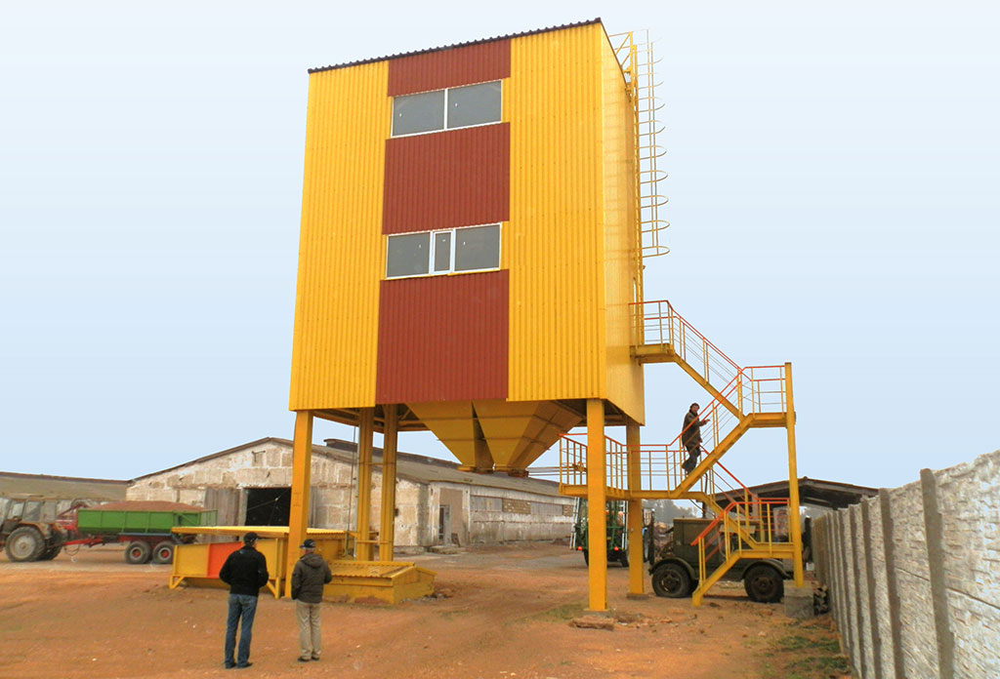

.png)
Зерноочистительные
комплексы
Послеуборочная очистка является обязательным звеном производства зерна. Эффективность этого процесса прямо влияет на эффективность последующих операций (сушка, хранение, переработка) и во многом определяет результаты всего производства.
Зерновой ворох, поступающий на послеуборочную очистку, представляет собой смесь полноценного, щуплого и поврежденного зерна основной культуры, семян различных культурных и сорных растений, а также примесей частиц растений, соломы, колосьев, половы, песка, комочков земли и др. При этом содержание примесей в зерне основной культуры может составлять от 2-х до 15-ти %.
Предварительная очистка зернового вороха
Выделение легких, мелких и крупных примесей с целью обеспечения благоприятных условий при выполнении последующих технологических операций послеуборочной обработки зерна, главным образом его сушки.
Первичная очистка зерна
Выделение крупных, мелких и легких примесей и сортирование на основную (продовольственную и семенную) и фуражную фракции при минимальных потерях основного зерна. При этом основная фракция должна соответствовать нормам заготовительных базисных кондиций. При невысокой засоренности и влажности зерна послеуборочную обработку можно начинать с первичной очистки.
Вторичная очистка
Применяется для зерна, прошедшего первичную очистку с целью доведения его качества до кондиций продовольственного или семенного назначения.
Сортирование
Разделение зерна основной культуры на фракции по какому-нибудь признаку (размерам, плотности, скорости витания и т.д.). К сортированию можно отнести и калибрование — разделение семян по размерам. Таким образом, послеуборочная очистка представляет собой комплекс взаимосвязанных и дополняющих друг друга технологических операций, результатом которых является обеспечение качества зерна, позволяющего использование его в пищевых, фуражных или семенных целях.
